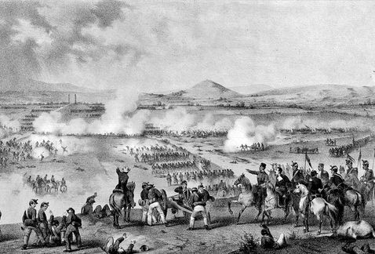

En enero de 1862 las tropas francesas, españolas y británicas invadieron México en protesta por la suspensión de los pagos de la deuda extranjera decretada por el Presidente Benito Juárez. Los representantes de los gobiernos involucrados negociaron entre sí, logrando el mexicano que españoles y británicos desalojaran el territorio nacional. Sin embargo el 17 de abril los franceses iniciaron su avance en nuestro país. Aunque la deuda era un elemento importante, lo esencial en esta invasión era el interés de Napoleón III en establecer un imperio americano que contuviera la expansión anglosajona.

En octubre de 1861, Francia, Inglaterra y España suscribieron la Convención de Londres, en la cual se comprometieron a enviar contingentes militares a México ya que este tenía una gran deuda de 80 millones de pesos, aproximadamente eran 69 millones para los ingleses, 9 millones para los españoles y 2 millones para Francia. La alianza tripartita amenazó al presidente Benito Juarez con una invasión inminente si no se saldaba por completo las deudas que México tenía con los tres países europeos. Juarez responde con un exhorto para lograr un arreglo amistoso, y los invitó a conferenciar. Sin embargo, sabía que había una guerra inminente y trató de proteger la Ciudad de México trasladando pertrechos y ordenó la fortificación de Puebla. Creo al Ejército de Oriente y el hombre que se designó en el mando fue el general Ignacio Zaragoza.
Antes del 5 de Mayo, el día 28 de abril de 1862 tuvo lugar un enfrentamiento conocido como la Batalla de las Cumbres entre el Ejército Expedicionario Francés y el Ejército Mexicano. En este conflicto hubieron cerca de 500 bajas francesas en contra de apenas 50 bajas mexicanas. Pese a esto, el Ejército Expedicionario francés consigue hacerse con el control del Paso de Acultzingo. El 2 de mayo parte el Ejército Expedicionario Francés desde San Agustín del Palmar en Veracruz con rumbo para cruzar la Sierra Madre Oriental y dirigirse hacia Puebla ya que era paso obligado para llegar a la capital del país. El 5 de mayo a las 9:15am aparecen los franceses en el horizonte pero no es sino hasta las 11:15am cuando comienzan las hostilidades anunciándose con un cañonazo desde el Fuerte de Guadalupe y acompañado por los repiques de las campanas de la ciudad.

En Palacio Nacional en la Ciudad de México se sabía poco acerca del conflicto más allá del telegrama recibido a las 12:30 en el que Zaragoza avisaba que el intercambio de fuego había iniciado. A raíz de la incertidumbre el gobierno había hecho salir precipitadamente al general Florencio Antillón al mando de los Batallones de Guanajuato, quedando como guardianes de la capital sólo 2,000 hombres del Regimiento de Coraceros Capitalinos

(Ignacio Zaragoza Seguin; Bahía del Espíritu Santo, Texas, 1829 - Puebla, 1862) Militar mexicano. De ideas progresistas, luchó contra la dictadura de Santa Anna y apoyó a Benito Juárez durante la Guerra de Reforma (1858-1960), contribuyendo decisivamente a la victoria final de los liberales. Dos años después, en los inicios de la invasión francesa de México, obtuvo una brillante victoria en la batalla de Puebla (5 de mayo de 1862), por la que es honrado como héroe nacional; lamentablemente, una enfermedad puso fin a su vida pocos meses después, a los treinta y tres años de edad.

(José de la Cruz Porfirio Díaz Mori; Oaxaca, 1830 - París, 1915) Del nombre de este militar y estadista mexicano procede la designación de todo un periodo de la historia moderna de México: el Porfiriato (1876-1911). Y el mismo sufijo ya sugiere lo que fue: una férrea dictadura personalista y paternalista que reprimió toda oposición y anuló la libertad de prensa.
Miguel Negrete Novoa fue un general militar nacido el 8 de mayo de 1824 en Tepeaca, Puebla; es considerado el principal héroe de la batalla del 5 de mayo de 1862 después del General Ignacio Zaragoza. Negrete fue investido con el cargo de general en 1862 por orden de Ignacio Zaragoza, fue el único militar nacido en Tepeaca con el grado de General de División, por ese motivo, su recuerdo se mantiene vivo como en monumento en la Plaza de Armas, o la inscripción de su nombre en letras de oro en el muro de honor del Congreso del Estado.


 1
1 4
4 5
5 6
6 7
7 8
8 9
9